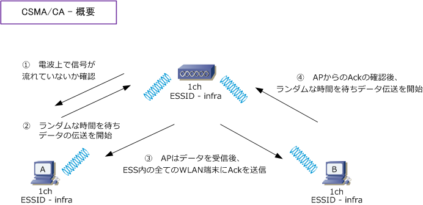
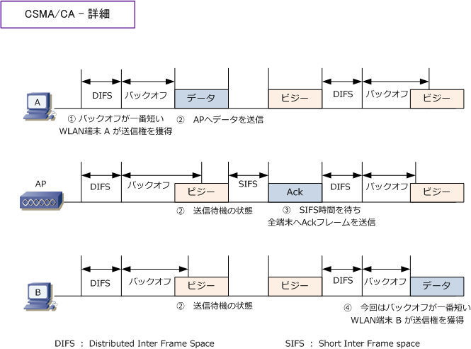
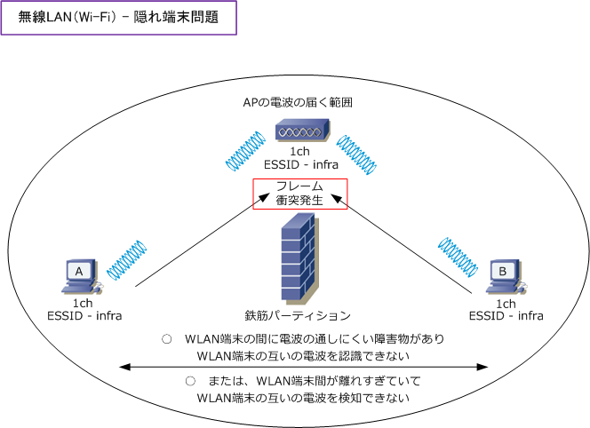
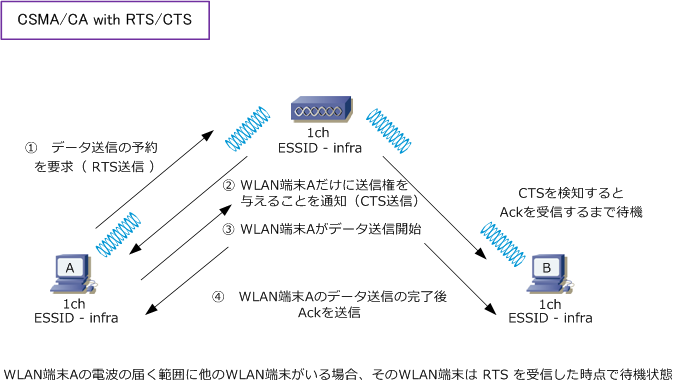

Wireless LAN - CSMA/CA
無線LAN - CSMA/CAとは
CSMA/CAは、Carrier Sense Multiple Access with Collision Avoidanceの略であり、無線LANの通信規格 のIEEE802.11a、802.11b、802.11g の通信手順として採用されているものです。CSMAは、CSMA/CDと 同様に、通信開始前に伝送媒体上（無線LANでは電波）に、現在通信をしているホストがいないかどうかを 確認するというCarrier Sence（CS）、複数のホストが同じ伝送媒体を共有して現在他のホストが通信して いない場合は、通信を開始するというMultiple Access（MA）のCSMAです。そして、Carrier Senceにより 通信できる状態分かっても CSMA/CA の場合はさらにランダムな時間だけ待機してからデータを送信します。

無線LANではフレーム衝突を検出できないため、この手法で衝突を回避（Collision Avoidance）します。
WLAN の端末は「ランダムな時間を待ちデータの伝送を開始」としていますが、正確には下図のとおり DIFSと呼ばれる時間において電波を検知しなければ、電波上で信号が流れていないと判断して、その後 ランダムな時間（バックオフ）を待ち、データの伝送を開始します。APから端末へと送信される Ack は SIFSと呼ばれる時間を待った後に送信されます。このAckのやりとりで、データの信頼性を高めています。

※ IEEE802.11e の EDCA によるQoS制御は、管理者が制御可能な値のIFSやバックオフを調整することにより実現しています。
| CSMA/CAの用語説明 | |
|---|---|
| ビジー状態 | 電波が使用中である状態。一方、アイドル状態とは電波が未使用である状態のこと |
| バックオフ | フレームの衝突を回避するために、フレーム送信を待機するランダムな時間 |
| DIFS | ビジー状態のチャネルから信号が検出されなくなり、アイドル状態に移行したと判断されるまでの時間 |
| SIFS | フレーム送信間隔における最短の待ち時間。Ackフレームなどは、SIFSを待ってから送信される |
以上のとおり有線LANの半二重で使用されるCSMA/CDと同じように、IEEE802.11a/b/g 通信においては 半二重の通信を行っており、ある瞬間においてアクセスポイントが通信しているWLAN端末は一台だけです。 人が見ると複数端末が同時に通信しているように見えますが、実際には複数の通信が順番で行われています。
1つのAPに複数のWLANクライアントがいる環境において、無線LANが CSMA/CA で「ある瞬間において アクセスポイントが通信しているWLAN端末は1台」とはいえ、そのある瞬間において、WLAN端末が最大 伝送速度（802.11gの場合は54Mbps）を使用できる訳ではありません。複数のWLAN端末が存在する以上 交互に通信を行うことから待ち時間が発生するので1秒間に転送できるビット数(= bps)は遅くなるのです。
無線LAN - CSMA/CA with RTS/CTS
無線LANでは「隠れ端末」という問題が発生することがあります。下図のとおり、WLAN端末間において 電波を通しにくい遮蔽物があったり、WLAN端末間に距離がありすぎて互いの電波を検知できない場合は Carrier Senceによりビジー状態と認識できないため互いにフレームを送出する結果、フレームの衝突が 発生していまいその結果、スループットが低下してしまいます。この「隠れ端末問題」を回避するために IEEE802.11ではRTS/CTSを用いたCSMA/CAで、この問題を解消しています。先ほど紹介したAckによる CSMA/CA with Ackに対して、今回紹介する技術は CSMA/CA with RTS/CTS による無線通信の制御です。

CSMA/CA with RTS/CTSでは、WLAN端末からのデータ送信が同時に発生しないように、データの送信の 許可を求めて（Request To Send）、データの送信を許可する（Clear to Send）という通信制御方式です。 下図の通りのフローとなりますが、RTS信号やCTS信号のやりとりが発生するため、CSMA/CA with Ackに 比べてスループットは低下することになります。このため、APによってデフォルトで使用しない設定として いる場合もあります。最近ではCSMA/CA with RTS/CTSを使用するかどうかを自動調整するAPもあります。

CSMA/CA with RTS/CTSは、隠れ端末問題の回避だけでなくIEEE802.11bと11gの混在している無線LAN 環境でも役立つ実装です。11b のWLAN端末は11g のOFDM方式を解読できないため、11g のWLAN端末が データ転送をしていることを認識することができずデータを伝送しはじめる結果、フレームの衝突が発生し、 スループットが低下する結果となってしまうのですが、CSMA/CA with RTS/CTSにより衝突を回避できます。